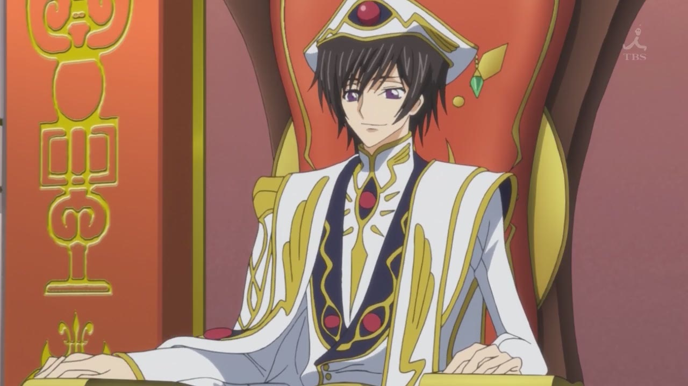
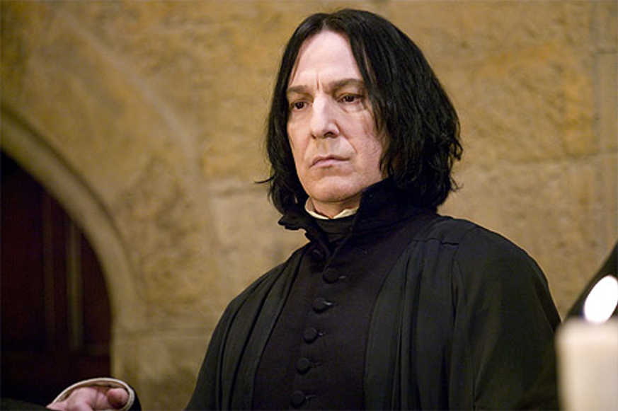
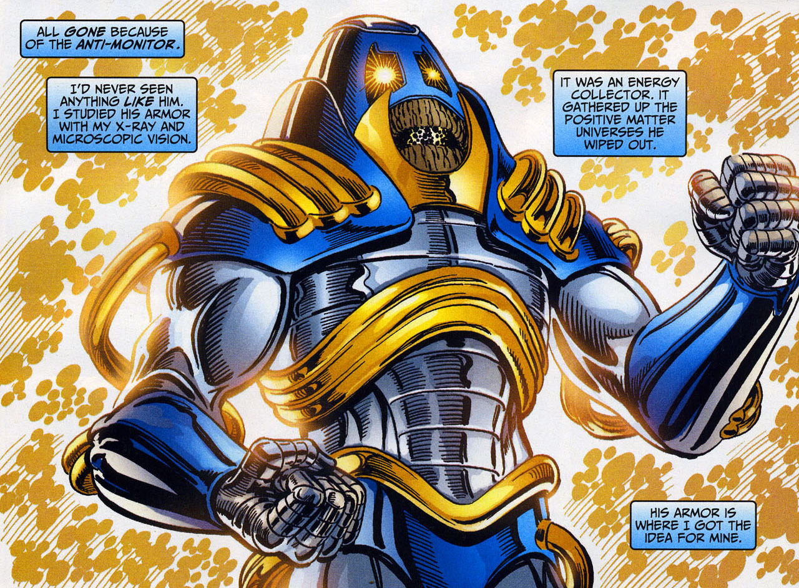

Photo Gallery
Some of my Favorite Characters




The images above are of some of my favorite characters in all of fiction. Below is a nifty guide to identifying them.
The kid sitting in the fancy clothes is Lelouch vi Britannia, from Code Geass: Lelouch of the Rebellion.
The guy holding up the black book labeled, "Death Note" is Light Yagami, from Death Note.
You should know who the slimy-looking guy in black is, but in case you didn't, he is Alan Rickman as Severus Snape, from the Harry Potter saga.
The weird cyborg-looking guy is the Anti-Monitor, from DC Comics. He may look wierd, but he is arguably the most powerful and sinister villain in the DC Universe.
The purple guy holding up his fist is Thanos, from Marvel Comics. You may know him from the end of the Avengers movie.
- Use CTRL-Left Arrow and CTRL-Right Arrow or move the mouse over the carousel to spin the carousel.
- Use CTRL-Up Arrow and CTRL-Down Arrow to tilt the carousel view.
- Press ESC to pause/resume the carousel.